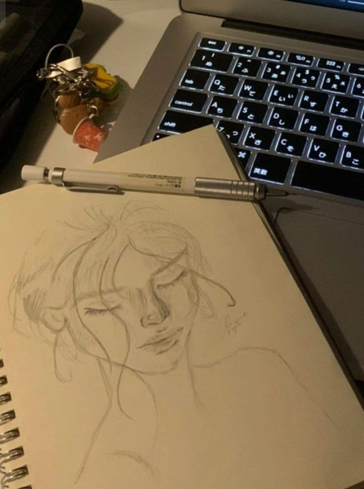
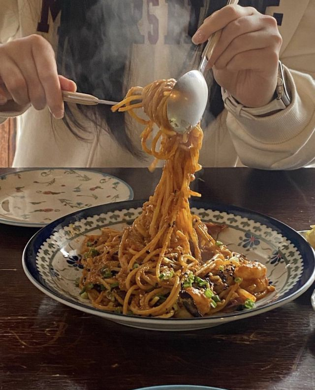
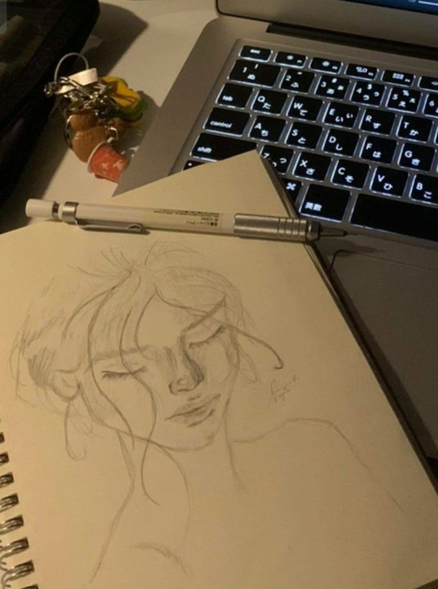
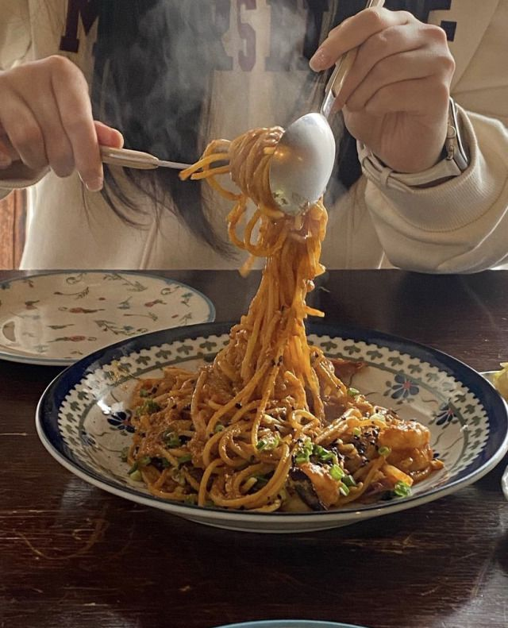

Hey It's Mehenaz Tabassum!
About Myself
Let me introduce myself first. I am Mehenaz Tabassum. I am selectively introverted and prefer to stay away from crowds. To be honest, I don't like being around people. My communication skills are poor, as I often struggle to converse without seeming rude or to sustain a conversation. This is why I choose to remain alone. I don't spend much time on social media. I just browse briefly for entertainment and then return to my life.
Education
I completed my SSC in 2021 and subsequently gained admission to Dinajpur Polytechnic Institute, where I was fortunate to be accepted into my preferred department: Computer Science & Technology. Now I am a student of Computer Science & Technology student at Dinajpur Polytechnic Institute. While not officially employed, I am deeply engaged in creating websites and honing my skills in this dynamic field. I am highly determined about my career and do not want any distractions. This website is a personal project born out of curiosity and a desire to test my web development abilities. It's been a while since I've coded anything due to lab classes and exam pressure.It's a reflection of my commitment to growth and continuous learning in the ever-evolving tech landscape
Hobbies
I have a profound passion for books and an extensive collection to reflect this. Whenever I feel I am spending too much time on social media, I immerse myself in books, whether they are academic texts, novels, poetry, or self-help literature. In addition to reading, I also enjoy listening to music. Whether I am getting ready for the day or need to relax, I find solace in playing music that refreshes my mind and soothes my soul.
I also enjoy sketching, although I don't do it often because it requires a significant amount of focus and time. Since I am usually occupied with studying, reading, programming, or listening to music, I only sketch occasionally. I enjoy cooking too. Whenever I come across new recipes on YouTube, I try them out.

 



Relationship Status
My relationship status has always been single. The reason for this is that I find it challenging to meet a man who meets my standards, and relationships can be quite complicated these days. They often lead to people getting hurt. Also I prioritize building my career before love. I am drawn to nerdy guys who focus on their studies and careers, not those who play games. I prefer good boys over bad boys. I admire men who respect and support women, remain calm, and have control over their anger. I appreciate men who communicate their desires clearly and face situations head-on rather than running away. I prefer fighters, not cowards.
I have a habit of pushing people away whenever I feel unwanted. To date me people need to defeat my attempts to push them away and show they're willing to fight for me. While it might seem a little bit toxic, it's something beyond my control. I also hate disloyal people. If someone is committed to me, they should exclusively mine and not flirt with others. I can be quite possessive and jealous, and I admit to being a bit of stalker when I am in love. You could say I am a little psycho in love, though I won't hurt anyone - I would rather destroy myself. I am afraid of falling in love because of the potential consequences for me. LOVE, in my head, is so beautiful that no man alive can compete with the world I've created in my mind. In my dreams, this is how love looks like -
Quotes
Some of my favorite quotes are -
- "The best way to predict your future is to create it" - Peter Drucker
- "The best revenge is massive success" - Frank Sinatra
- "Dream big and dare to fail" - Norman Vaughan
- "Everyone in your life will have a last day with you and you don't even know when it will be"
- "Don't feed every dog you see suffering, some just need the strength to bite you."
- "I cannot classify you as a man if you need more than one woman to satisfy you"
- "Once you reach a certain level of maturity, you no longer get swept away by crushes. When you’re serious about your life and goals, you stop wasting energy on temporary distractions." - Mehenaz Tabassum